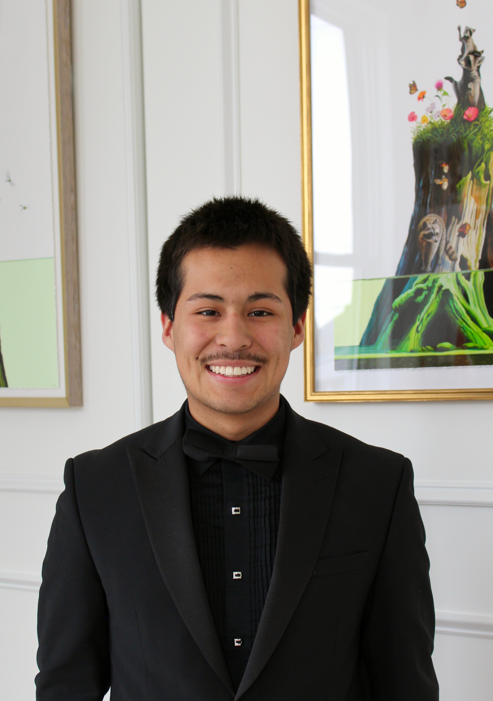
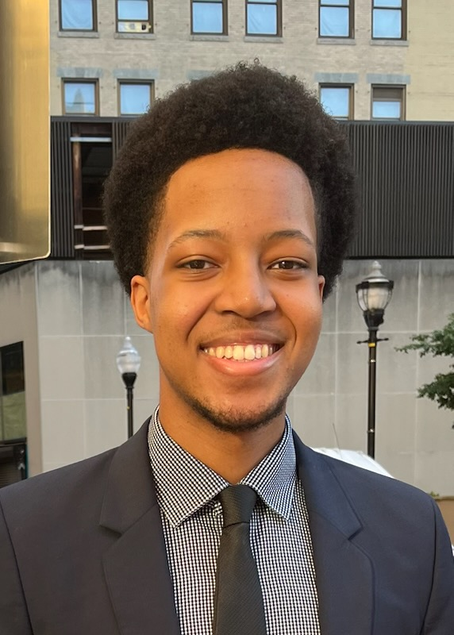
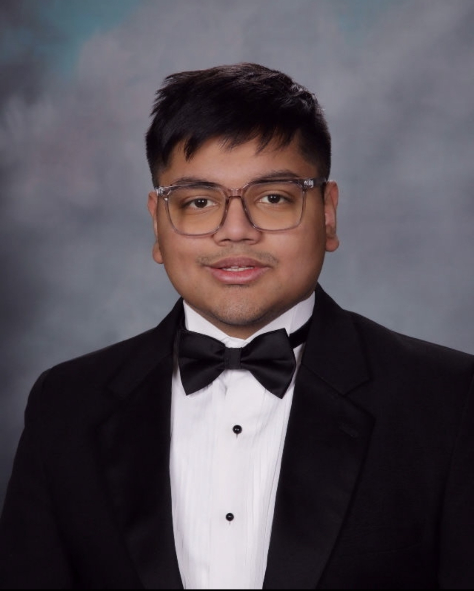
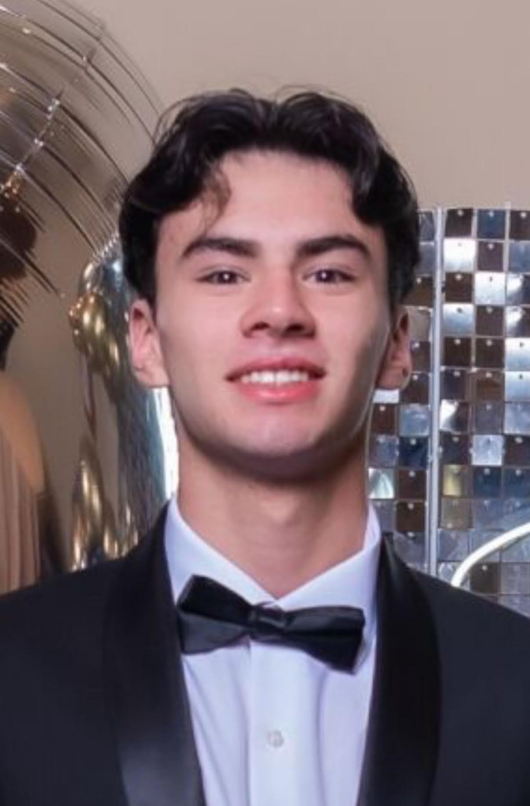

Guided by those
who've been there.

Cesar Espinoza is a transfer student from Loyola University New Orleans currently studying Biology at Boston University, with a focus in Public Health and Data Science. He founded Full Axis, a platform designed to expose the structure behind the college admissions process and help students navigate it with strategy and clarity. He works directly with students across first-year and transfer pathways, including high-achieving applicants seeking stronger outcomes and those refining academic direction, with a particular focus on STEM pathways where academic alignment is critical in selective admissions.
His advising focuses on building cohesive academic and extracurricular narratives tailored to different admissions contexts. He draws on experience receiving multiple academic writing awards, emphasizing clarity, structure, and intentional positioning in application development. Within Full Axis, he oversees advisor strategy and student matching, ensuring students are paired with mentors aligned with their academic and professional goals. The Axis Network emphasizes transfer admissions, where outcomes depend not only on academic benchmarks but also institutional priorities, requiring precise alignment across academic and extracurricular profiles.

Andrew is a transfer student from Tulane University to Cornell's Nolan School of Hotel Administration, where he is now a sophomore pursuing a career in consulting. After navigating the transfer process himself, he co-founded Full Axis to help others do the same. He will guide students through every step of the process, from school selection to crafting the final components of their applications. Andrew's strengths lie in business and finance, as well as his ability to help students build a clear, strategic path to success. He focuses on helping students craft narratives that reflect not only technical ambition, but also a deeper commitment to entrepreneurship and innovation.

Kellen is a pre-med transfer student from Tulane to Cornell University, where he is currently majoring in Human Biology, Health & Society with a minor in Health Care Policy. As a co-founder, he will help students refine their applications and reach new heights at any institution. What truly sets Kellen apart is his firsthand experience navigating both the transfer process and the path toward medical school. This experience makes him an invaluable resource for aspiring pre-med students and those pursuing careers in science, allowing him to offer thoughtful, experience-driven guidance. With his unique perspective, he helps students interested in STEM research and medicine better understand the journey ahead and approach it with clarity and confidence.

Azmain brings a nontraditional but highly strategic perspective to Full Axis, with deep experience navigating elite admissions and rigorous academic pathways. He earned a full ride offer to Vanderbilt and was also admitted to Columbia, Virginia Tech, URochester, UC Santa Barbara, and UC San Diego, alongside waitlists at Stanford and UC Berkeley. He is pursuing Electrical Engineering and Human & Organizational Development (HOD), with academic strengths spanning engineering, computer science, physics, applied mathematics, and the UC admissions process. Azmain helps students build balanced, realistic, and ambitious application strategies, whether targeting highly selective private universities or competitive public university systems.

Sarah is a Cornell junior pursuing a double major, who transferred from Middlebury College, navigating the shift from a liberal arts college to a research university firsthand as an international student. Sarah has four years of tutoring experience and currently serves as a New Member Educator at one of Cornell's prestigious business clubs, giving her a proven track record of working with students. Her advising strengths span the range of student experiences: adjusting to a new academic culture, studying abroad, switching majors, and finding the right career path. Sarah has experience in both tech and finance, and will be joining Goldman Sachs as an summer analyst soon. She can offer grounded, practical guidance on recruiting, pivots, and how your choice of major or institution shapes your professional trajectory.

Alec is a transfer student from Sacramento City College to the UC Berkeley College of Letters and Science, where he will major in Political Science and minor in Public Policy. He was admitted to every University of California campus, as well as Duke University. Over the past three years, Alec has built extensive experience in government affairs, working with some of California's leading lobbying firms and associations while also serving in multiple statewide student government roles. In addition, he has mentored friends and classmates through the California community college transfer process, developing strong knowledge of the Transfer Admission Guarantee (TAG) program and the UCLA/UC Berkeley Transfer Alliance Program (TAP). His expertise also extends to course planning, extracurricular development, and crafting strategic, compelling admissions essays.

Arturo Lemus is a second-year student at Purdue University, where he is currently studying biomedical engineering. Originally from Mexico, he later moved to the United States to pursue his education, bringing a diverse international perspective to his academic and professional work. His experience in programming and mathematics has helped him develop clear, analytical problem-solving skills that he uses to support students from different backgrounds as they build strong academic resumes and prepare for competitive opportunities.
Arturo takes a practical, student-focused approach to college consulting, offering guidance on course planning, skill development, and long-term academic strategy. He is committed to helping learners make informed decisions, gain confidence, and navigate higher education with clarity and purpose.